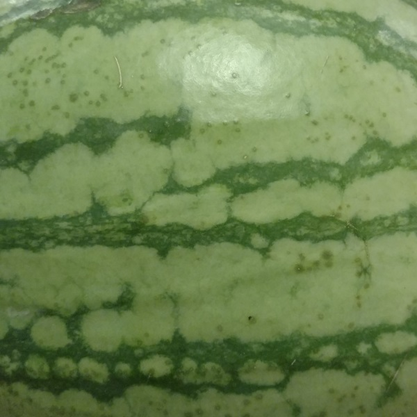
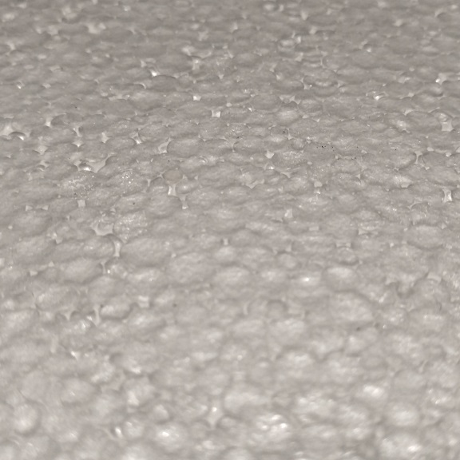

Exercise 7
Texture
Description:
Use a digital camera to capture compelling textures from the environment. Color should play an important role in the reason you chose to capture each texture.

My first texture is the bright green rind of a watermelon. It's vivid bright contrasting with the darker green plays a large role in it's apparent texture. Watermelons are smooth and round after all, with the apparent size of the watermelon being quite small. The rind shines in the lighting conditions that it is in, reflecting it's smooth, cold surface. There is a scratch on the watermelon in the upper left, natural or manmade marks from handling the melon.

The second texture is a piece of packing styrofoam, imaged from an off angle to show the depth of the bubbles that form it. It forms a very rough surface, each individual bubble being moderately held together with the bonds between foam pieces. The foam itself is quite brittle and hard, without much tensile strengththe corner. The foam is relatively flat and straight, but the edges are quite fragile and pieces rub off without much effort.